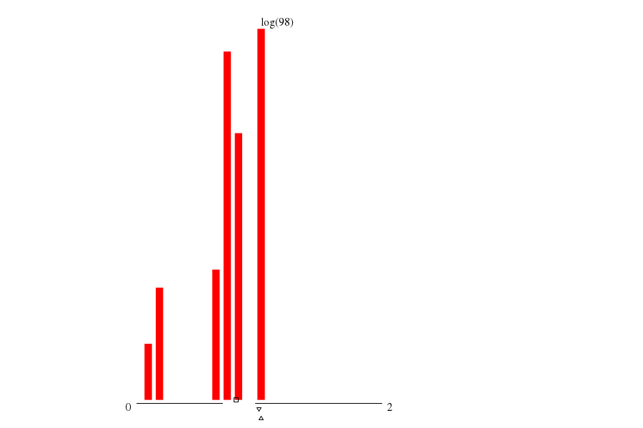

|  | ||
| maxs | mins | |
|
(104.su) 1 |
(103.su) 0 |
|
|
(107.su) 1 |
(106.su) 0 |
|
|
(108.su) 1 |
(111.su) 0 |
|
|
(105.su) 1 |
(110.su) 0 |
|
|
(141.su) 1 |
(109.su) 0 |
| cores_avg (cores) | mode ▵ | μ ▫ | (μ+σ)/μ | 1st alloc. max value | 1st alloc. max through ▿ | 1st alloc. min waste |
| -- 1.015 |
-- 0.809 |
-- 1.226 |
throu: 1.000 waste: 36.26%
alloc: 1.072 |
throu: 1.069 waste: 31.84%
alloc: 1.000 |
throu: 0.601 waste: 29.72%
alloc: 0.100 |